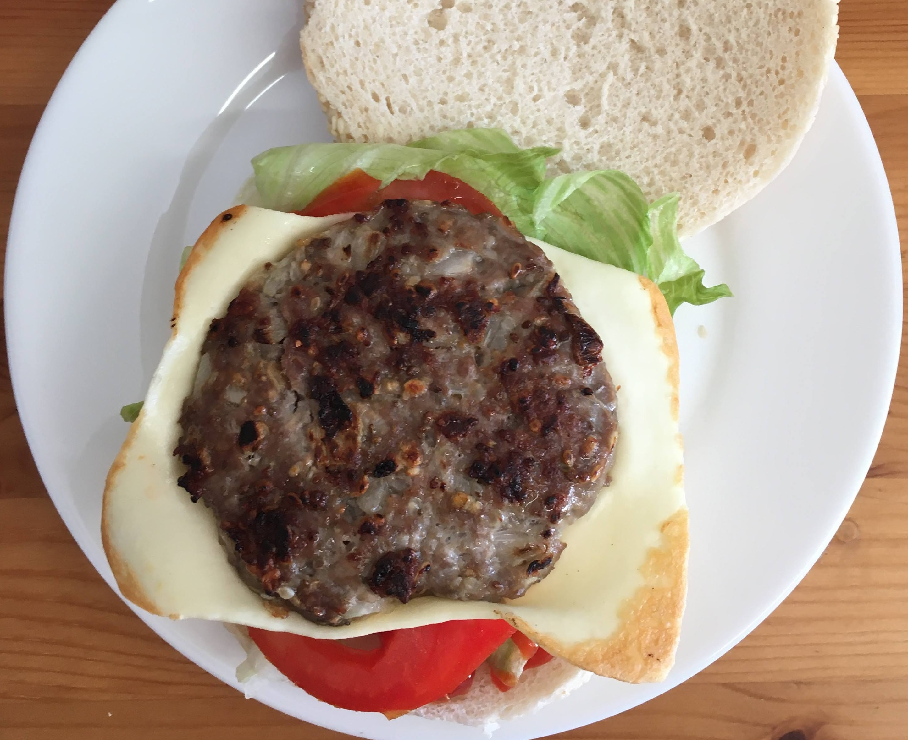

Hambúrguer funcional

Ingredientes
- 110 g de cebola picadinha (1/2 cebola)
- 8 g de alho picadinho (4 dentes)
- 500 g de carne moída (2 xícaras de chá)
- 27 g de aveia em flocos finos (1/4 xícara de chá)
- 37 g de farinha de trigo (1/4 xícara de chá)
- 18 g de chia (2 colheres de sopa)
- 15 g de gergelim (2 colheres de sopa)
- 1 ovo
- 8 g de sal (1 colher de café)
- Pimenta do reino a gosto
Modo de preparo
- Misturar bem todos os ingredientes em um bowl ou no processador;
- Moldar os hambúrgueres com moldador ou à mão (fazer uma bolinha e então achatar);
- Grelhar em uma frigideira levemente untada com azeite ou óleo de coco, em fogo baixo, dos dois lados.
Observação
- Opção de montagem de sanduíche: pão de hambúrguer, alface americana, ketchup, tomate, queijo e hambúrguer funcional grelhado.